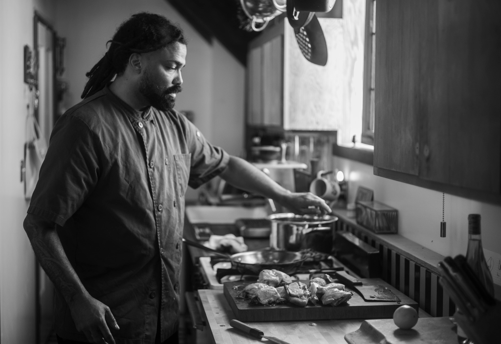
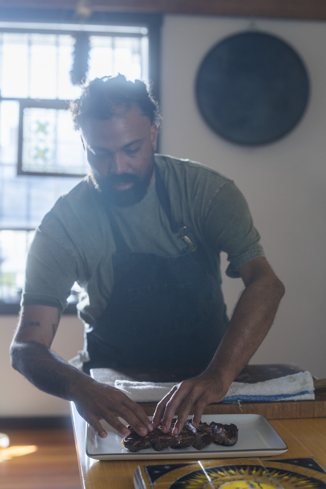

About
I'm Chef Manny, a private chef serving the San Francisco Bay Area. I cook with what's fresh and in season — simple ingredients, vibrant flavors, and lots of fresh herbs. I'm a California native with Puerto Rican, Cuban, African American, and honorary Mexican roots, and those influences naturally find their way into my cooking. I've never wanted to be confined to one style of food; I cook across cultures, learn as I go, and love putting my own spin on things.
Food has always been how I bring people together. My mother taught me that from an early age, using food to introduce me to different cultures and celebrate them. Before becoming a chef, I spent more than 15 years as a server at some of the best restaurants in the Bay Area — learning how to read a room, anticipate what people need, and notice the small details that make a meal unforgettable. I bring those same instincts into the kitchen today.
I've cooked for private clients, new mothers, families, and celebrations of every kind, working around dietary needs so no one feels like an afterthought. At the end of the day, I want people to feel cared for — and glad I was there.
Services
A private dining experience brought fully into your home, whether it is a quiet night in or a celebration worth marking. Every detail is handled, from a thoughtful menu to a polished presentation, so the evening feels like a restaurant of your own without ever leaving the house.
Consistently well made meals, prepared fresh and ready in your kitchen each week. Get your time back and eat well, without giving any thought to shopping, cooking, or cleanup.
A private dinner for your team or clients that feels considered rather than catered. The kind of evening that leaves a lasting impression, hosted wherever you choose to gather.
Gallery
Testimonials
“Chef Manny brings so much heart to the food that he prepares for our family. He always has a positive attitude and is a pleasure to collaborate with on menu planning and ingredient management. He is thoughtful about preventing food waste. Most importantly: his food is delicious!! Thank you, Manny!”
Melanie B.
“Chef Manny exceeded every expectation. Hosting a live dinner for 24 guests in our backyard is no small feat, yet he made the entire experience feel effortless.”
Michelle P.
“Beyond the incredible food, Chef Manny brought a warm, confident presence that elevated the entire experience. We received countless compliments from our guests and couldn't have been happier.”
Sarana D.
“His talent and creativity shine through in every dish. The crimini mushrooms were the unanimous crowd favorite, and the mesquite-grilled bone-in ribeye was simply unforgettable—perfectly cooked and so tender it practically melted in your mouth.”
Eve E.
“He arrived early in the morning to prep everything at the house, and made everything from scratch, and as guests started arriving, the whole place smelled amazing from the fresh herbs he was using for the dishes.”
Farshid G.
“I also appreciated how he engaged with guests while cooking. People would stop by the kitchen, chat with him, ask questions, and taste some of the food along the way. It made everyone feel included in the experience rather than simply waiting for the meal to be served.”
Belinda G.
“I also appreciated how he engaged with guests while cooking. People would stop by the kitchen, chat with him, ask questions, and taste some of the food along the way. It made everyone feel included in the experience rather than simply waiting for the meal to be served.”
Gidge B.
“We asked for informal, family style and discussed some of the wines we were pouring and he ran with a menu that worked very well. Everyone was impressed!”
Jared P.
“We hired Chef Manny to help us with some meal prep during my last weeks of work and pregnancy with a toddler. He is phenomenal!”
Nahal G.
“Chef Manny was a great fit for our family's meal prep needs. He took straightforward dishes and enhanced their flavors with fresh herbs and spices. I knew working with him was a success when my younger children, who are typically picky eaters, walked into the house and immediately asked if they could have whatever smelled so good.”
Felicia M.
Contact
[One or two sentences inviting people to reach out — mention lead time needed, service area, or what info is helpful to include in a first message.]